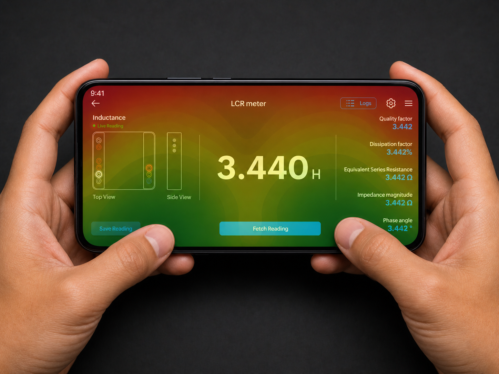
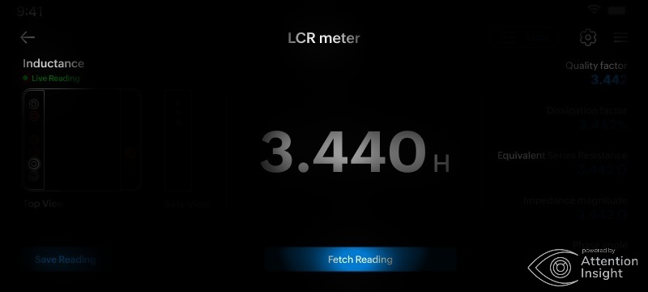
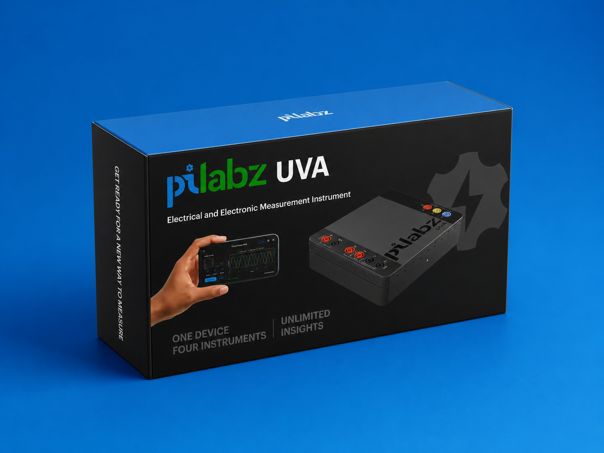
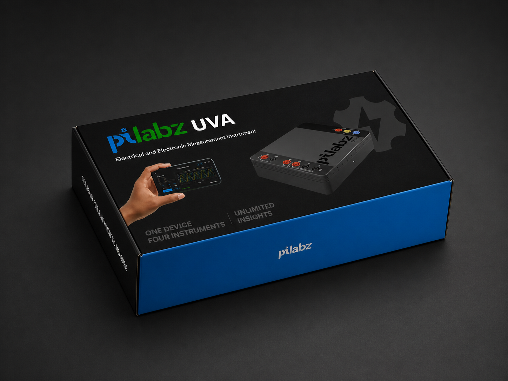
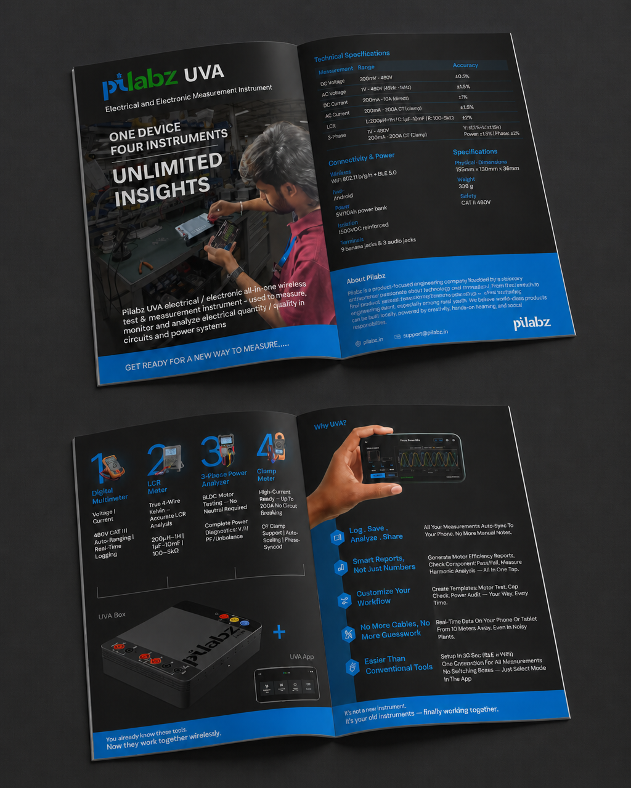
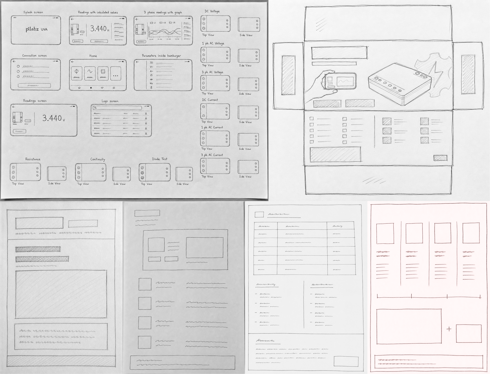
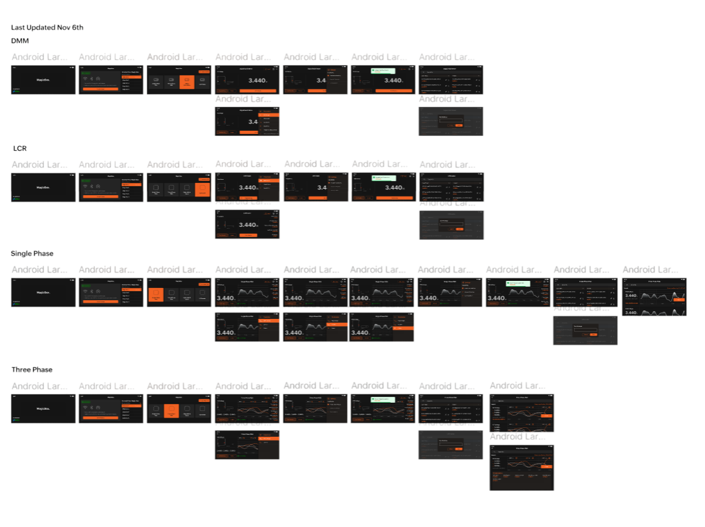
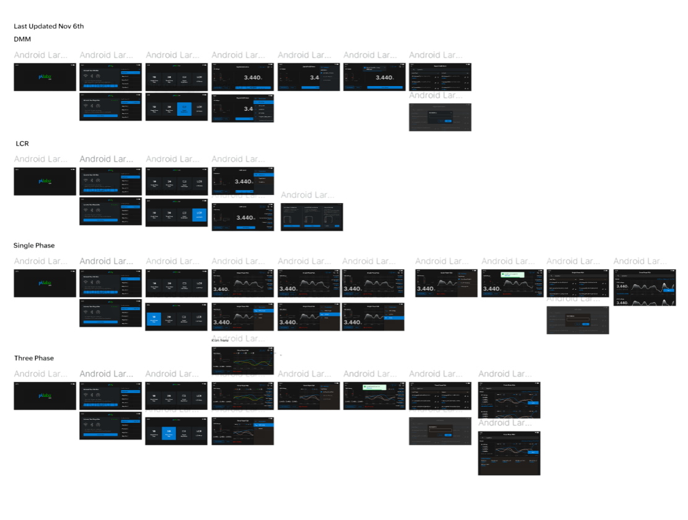

App · Brochure · Packaging · End-to-end · 2025
Pilabz UVA
A wireless electrical measurement instrument - one device, four instruments. I owned the design from first research interview to printed retail label.
01 — Overview
One product. Every touchpoint.
UVA combines a DMM, LCR meter, 3-phase PQA, and 1-phase PQA in a single wireless device, removing the screen from the hardware and putting it on the engineer's phone. I was responsible for the Android app, product brochure, and retail packaging labels for the beta shipment.
01 — Research and process
Understanding engineers before designing for them
Before any wireframe, I sat with real electrical engineers at Pilabz. Through one-on-one interviews, I surfaced pain points with existing measurement tools: switching between multiple apps, getting no feedback on wrong probe connections, and losing readings because the screen was too small.
From there I built a journey map and user flow, defined the information architecture, and produced lo-fi wireframes that were tested with the team before a single pixel of UI was touched.
One shared structure, four instruments. App, brochure, and packaging were designed from the same research and product logic.


02 — Where the redesign work happened
Where the real design work happened
Wrong probe setup gives nothing - no error, just silence
Custom schematic illustrations for every instrument-parameter combination stay fixed on the left of the reading screen. Always visible. Never in the way.
Landscape keyboard covers most of the screen
Almost all free-text input was removed from active sessions. Everything is a tap, so the keyboard never competes with live data.
One layout for four completely different instruments
Primary reading, secondary values, derived values, and graph zones stay in a fixed structure. Only the content changes.
Three save modes, not all valid for every instrument
Each save screen shows only applicable modes. Every log entry is tagged with instrument type and save mode so engineers can scan without opening it.
04 — Beyond the screen
Where the product meets the physical world


Designed to sell the concept before the box is even opened. From screen to shelf, the same visual language carries into packaging.

Two spreads to convince a technical buyer with instrument functions, real specs, and a clear reason to choose UVA.

First scribbles on paper - instruments, layouts, and reading hierarchies.


Full rebrand from Karuvi to Pilabz - every screen updated from tokens.
04 — Takeaways
What this project taught me
Being in charge of this product from the very first user interview to the printed retail label gave me something no single-deliverable project could: a complete experience of the product lifecycle. Research shaped the structure. Structure shaped the app. The app's visual language shaped the brochure. The brochure shaped the packaging. Every touchpoint was connected, and I connected them.